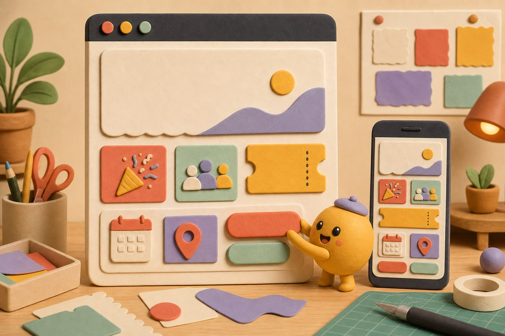
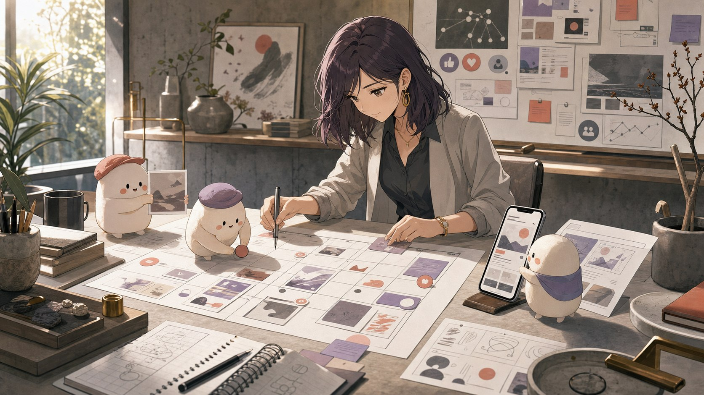

社群經營與活動網頁Social Media & Campaign Pages
從日常社群發文、小編經營到活動網頁設計，維持穩定而一致的品牌溝通。

WORKING SCENE
工具不同，工作重點也不同。
以下為 AI 輔助情境插圖，用來呈現工作方式與角色語言，不代表特定客戶或實際專案成果。



01 — CONTENT RHYTHM
讓品牌溝通有穩定節奏，也保留人味
- 01
社群更新不穩定
有產品與消息需要溝通，但缺少固定主題、排程與執行人力。
- 02
品牌語氣不一致
不同時間製作的文字與視覺缺少一致方向，需要建立可延續的溝通方式。
- 03
活動需要獨立入口
新品、募集或期間活動需要一個資訊清楚、手機也方便閱讀的活動頁面。
- 04
留言互動需要維護
需要固定的小編角色協助發布、基本回覆與社群日常整理。
SCOPE & OUTPUT
從日常社群到活動頁面的內容系統
OUTPUT
可以被確認的交付內容
- 社群主題與內容排程
- 貼文文案與視覺規劃
- 發文、小編經營與基本互動
- 活動網頁與 Landing Page 設計
SERVICE BOUNDARY
合作前先確認的界線
實際平台、發文頻率、回覆時段、廣告投放、素材授權與帳號權限會在合作前確認。服務不承諾觸及、粉絲數或轉換等無法預先保證的結果。
03 — PUBLISHING FLOW
語氣、內容、發布與後續整理
- 01
確認品牌語氣與溝通目標
- 02
規劃主題、素材與發布節奏
- 03
製作貼文或活動頁面
- 04
依實際互動整理後續內容
ADVANTAGES
可愛不等於隨意，活潑也能有一致規劃
- 社群內容與活動頁面可維持同一套品牌語言
- 小型團隊溝通直接，主題與排程調整較有彈性
- 不只製作單篇貼文，也整理可持續的內容節奏
- 活動資訊可獨立成頁，避免重要內容埋在社群時間軸